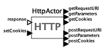
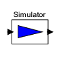
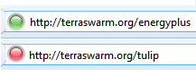
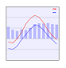

Integrated web server
for easy service hosting

Actor library for
snap-together services
Actor library for
snap-together services

Multi-purpose Simulator actor harnesses TerraSwarm toolbox (EnergyPlus, TuLiP, ...)
Multi-purpose Simulator actor harnesses TerraSwarm toolbox (EnergyPlus, TuLiP, ...)
Pub-sub library for accessing Sensor Andrew data

Start and stop web services according to demand
Start and stop web services according to demand
Graceful recovery from crashes and security threats

Dynamically compose
new services

Predict and adapt to
clients' needs
Predict and adapt to
clients' needs